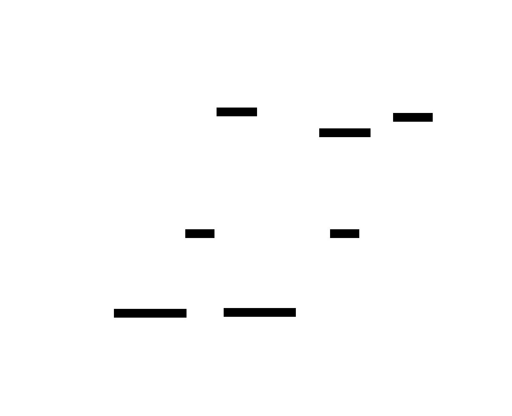

Writing Property-based Tests¶
What you can do with cppproptest¶

Here's the list of property-based test functions and macros you can use in cppproptest:
Property Function and Its Test Methods¶
You can define a property with a criteria function and certain input domain. You can choose to verify the criteria function with randomly generated inputs (forAll()) or with manually specified ones (example()). You can also exhaustively test all combinations of inputs based on the values you provided (matrix()).
| Name | Description | Remark |
|---|---|---|
proptest::property() |
Define a property based on a callable | |
.forAll() |
Run the property with random inputs | |
.matrix() |
Run the property with Cartesian product of inputs | Input list as initializer_list |
.example() |
Run the property with specific inputs |
Shorthands for Property Test Methods¶
You can use convenient shorthands for above methods.
| Name | Description | Remark |
|---|---|---|
proptest::forAll() |
Define and run a property immediately | Shorthand for proptest::property(callable).forAll() |
proptest::matrix() |
Define and run a matrix test immediately | Shorthand for proptest::property(callable).matrix() |
Google Test Assertion Macros¶
You can wrap around a property test with Google Tests' macro so that you make Google Test consider the property test failure as a test failure (otherwise, the property test will only print the failure information to standard output and return false.).
| Name | Description | Remark |
|---|---|---|
EXPECT_FOR_ALL() |
Run proptest::forAll with EXPECT_TRUE Google Test macro |
Shorthand for EXPECT_TRUE(proptest::forAll(...)) |
ASSERT_FOR_ALL() |
Run proptest::forAll with ASSERT_TRUE Google Test macro |
Shorthand for ASSERT_TRUE(proptest::forAll(...)) |
Defining and running a property test¶
property() defines a property with optional configurations. By calling property(), you are creating a Property object. forAll() is the shorthand for calling Property's method forAll(). Property::forAll() performs property-based test using supplied callable (function, functor, or lambda). While forAll() would work most of the time, property() in combination with its methods .forAll(), .example(), .matrix() can be more versatile and configurable at times.
forAll([](int a, int b) -> bool {
return a + b == b + a;
});
is equivalent to:
property([](int a, int b) -> bool {
return a + b == b + a;
}).forAll();
Defining a Property¶
Defining a property requires a callable. For example, a lambda as following is such a callable with an int as parameter:
[](int a) -> bool {
return a >= 0;
}
Arguments are generated automatically by the library and the return value of the function will indicate success(true) or failure(false) of the property.
Asserts can also be used to mark successes and failures. If you prefer not to use boolean return value to indicate success/fail, you can use void return type and use assertions instead:
[](int a) {
PROP_ASSERT_GE(a, 0);
}
Generators and Arbitraries under the hood¶
In above case, the function is called with an integer argument randomly generated by the test library. The library will repeatedly feed in some random values into the function for given number of runs.
Under the hood, the library requires a generator for each of given parameter types. For each parameter, either an Arbi<T> (an arbitrary, the default generator for type T) should be defined ahead, or a custom generator must be provided. In above example, a predefined generator Arbi<int> is used to generate an integer argument.
You can provide a custom generator as additional argument(s) to property() function, as following:
property([](int a, int b) -> bool {
return true;
}, myIntGenerator);
Any remaining parameter in the property function with no custom generator supplied will be generated using an arbitrary. In above example, int a is generated using myIntGenerator as it was supplied in the arguments, while int b will be generated using Arbi<int>, as no custom generator was supplied. If there is no arbitrary defined for a type and no custom generator is supplied either, a compile error will be emitted, as the library cannot test a property without a generator for the input type.
Many primitive types and standard containers have their default generators Arbi<T> defined by the library for convenience.
You can find more about generators and see the full list of built-in Arbitraries in Generators page.
Testing a Property¶
Once a property has been defined, you can run a simple randomized test based on the defined property with Property::forAll().
auto prop = property([](int a, int b) -> bool {
return true;
}, myIntGenerator);
prop.forAll();
It will repeatedly call the lambda with different input combinations of a and b then stops after some designated number of runs or a time duration. If a property fails with an input combination by the lambda returning false or encountering an assertion failure, the test stops there and the library will provide some information on the failed case. If possible the library will simplify the failed case with a process called shrinking. See Shrinking page for more information on this process.
Specifying generators with Property::forAll()¶
While you can define a property with or without specifying generators, you can additionally specify or override some of the generators when calling .forAll(), by passing the generators as arguments.
// a is fixed to INT_MAX, while b is randomly generated
prop.forAll(just<int>(INT_MIN));
// specifying generator for both a and b
prop.forAll(just<int>(INT_MIN), inRange<int>(-100, 100));
In above example, proptest::just() is a generator combinator that simply keeps generating a single value. proptest::inRange is another example of generator combinator. It generates a numeric value within a given range.
Specifying example inputs with Property::example()¶
While having a randomized set of inputs is powerful, you might want to test the property with specific combination of inputs to ensure those combinations are always tested. This can be accomplished using .example(...). You need to specify all the parameters needed to call the callable:
// define a property
auto prop = property([](int a, int b) -> bool {
return a + b == b + a;
});
// check specific examples
prop.example(INT_MIN, INT_MIN);
prop.example(INT_MIN, INT_MAX);
prop.example(INT_MAX, INT_MIN);
prop.example(INT_MAX, INT_MAX);
Specifying full matrix of inputs with Property::matrix()¶
While .example() provides a way to test certain examples by specifying each one of them, you might want to go even further to test all combinations of concerned inputs (e.g. all defined enum values) by taking a Cartesian product of the input parameters. In above example,taking {INT_MIN, INT_MAX} for a and another {INT_MIN, INT_MAX} for b and multiply them as if it was a matrix multiplication. This will result in four combinations {(INT_MIN, INT_MIN), (INT_MIN, INT_MAX), (INT_MAX, INT_MIN), (INT_MAX, INT_MAX)}. .matrix() lets you do exactly this kind of combination test:
// equivalent to above using four `prop.example()`
prop.matrix({INT_MIN, INT_MAX}, {INT_MIN, INT_MAX});
// arbitrary size of the list can be used
prop.matrix({INT_MIN, 0, INT_MAX}, {INT_MIN, 0, 1, INT_MAX});
Configuring test runs¶
Setting number of runs¶
You can set the number of runs with Property::setNumRuns(int num). The default number of runs is 1000.
auto prop = property([](int a, int b) -> bool {
// ...
});
prop.setNumRuns(100).forAll();
You can set default number of runs affected globally by calling the static method PropertyBase::setDefaultNumRuns(int num). Subsequent properties will follow this number of runs unless specified with setNumRuns().
PropertyBase::setDefaultNumRuns(100);
Setting the random seed¶
A property can be configured a specific random seed. This can be done by calling Property::setSeed(unsigned long seed).
auto prop = property([](int a, int b) -> bool {
// ...
});
prop.setSeed(savedSeed).forAll();
If no random seed is specified, current timestamp in milliseconds is used. You can override these unspecified random seeds globally with an environment variable PROPTEST_SEED. This comes in handy when you have encountered a failure and its random seed value is available for reproduction:
# ... failed test with random seed 15665312
$ PROPTEST_SEED=15665312 ./my_proptest
Setting maximum test duration¶
You can set maximum duration for a property test run by calling Property::setMaxDurationMs(). This will limit the time regardless of number of runs. It can be useful if your time resource is limited or if you have some external timeout duration configured.
prop.setMaxDurationMs(60000); // will run the test for maximum of 60 seconds, if number of runs does not run out first.
Chaining configurations¶
You can chain the configurations for a property as following, for ease of use:
auto prop = property([](int a, int b) -> bool {
// ...
});
prop.setSeed(savedSeed).setNumRuns(1000000).setMaxDurationMs(60000).forAll();
Using Assertions¶
cppproptest provides assertion(fatal)/expectation(non-fatal) macros based on the popular Google Test library.
// PROP_EXPECT*: non-fatal, continues upon failure
PROP_EXPECT(condition);
PROP_EXPECT_TRUE(condition);
PROP_EXPECT_FALSE(condition);
PROP_EXPECT_EQ(A, B);
PROP_EXPECT_NE(A, B);
PROP_EXPECT_LT(A, B);
PROP_EXPECT_GT(A, B);
PROP_EXPECT_LE(A, B);
PROP_EXPECT_GE(A, B);
PROP_EXPECT_STREQ(A, B, N);
// PROP_ASSERT*: fatal, breaks test upon failure
PROP_ASSERT(condition);
PROP_ASSERT_TRUE(condition);
PROP_ASSERT_FALSE(condition);
PROP_ASSERT_EQ(A, B);
PROP_ASSERT_NE(A, B);
PROP_ASSERT_LT(A, B);
PROP_ASSERT_GT(A, B);
PROP_ASSERT_LE(A, B);
PROP_ASSERT_GE(A, B);
PROP_ASSERT_STREQ(A, B, N);
Also, there are Google Test compatible macros for forAll that fails the gtest test case or suite upon a property test failure (since with a bare forAll, the failures won't behave as gtest failure):
EXPECT_FOR_ALL(...); // non-fatal, shorthand for EXPECT_TRUE(proptest::forAll(...));
ASSERT_FOR_ALL(...); // fatal, shorthand for ASSERT_TRUE(proptest::forAll(...));